المال والتقارير
لا تحتاج أن تكون محاسباً: كل فاتورة وقبض ودفع تُقيَّد وحدها، والأرقام تخرج جاهزة.
- أين أجد…
- التقارير ولوحة المالك
- القوائم المالية: الميزانية وقائمة الدخل
- دليل الحسابات
- رأس المال والسحب الشخصي
- صندوق الدولار
- العملات التي تتعامل بها
- العملة وطريقة الدفع في الفاتورة الجديدة
- سند قبض وسند صرف
- تعديل سند أو إلغاؤه
- الشيكات المؤجلة
- قفل فترة
- إقفال السنة المالية
- قيد يدوي
- البنك ومطابقة الكشف
- الموازنة ومراكز الربحية
- الأصول الثابتة والإهلاك
- دفاتر بالدولار
- أسعار الصرف وإعادة التقييم
- التقرير الضريبي
أين أجد…
- الربح والمبيعات والنقدية: الرئيسية، واختر اليوم أو الشهر أو السنة.
- ما لي وما عليّ: في الرئيسية أيضاً، والتفصيل في صفحة كل زبون أو مورد.
- كشف حساب زبون: صفحة الزبون ← اختر المدة: هذا الشهر أو هذه السنة أو الكل، أو اكتب من وإلى واضغط عرض، ثم كشف حساب للطباعة. ويُرسل نصاً أيضاً. كل سطر يبدأ برقم قيده: يفتح القيد لمن له المحاسبة، ولغيره يفتح الفاتورة التي صنعته.
- أرصدة كل الزبائن والموردين على ورقة واحدة: التقارير ← اختر البيانات أرصدة الزبائن والموردين (لمن يرى المحاسبة)، وإلى تاريخ الرصيد: سطر لكل اسم له رصيد، ونوعه، ورصيده (لنا موجب، علينا سالب)، وآخر حركة. ثم Excel أو CSV أو طباعة / PDF. وكشف الحساب بالحركات يبقى لكل زبون من صفحته.
- ميزان المراجعة والقيود: المحاسبة.
- الميزانية العمومية وقائمة الدخل: القوائم المالية.
- الحسابات نفسها وإضافة حساب: دليل الحسابات.
- قيد، بنك، شيكات، موازنة، أصول، أسعار صرف، ضريبة: قيد يدوي، البنك، الشيكات المؤجلة، الموازنة والمراكز، الأصول الثابتة، أسعار الصرف، التقرير الضريبي.
- تقارير حسب الصنف أو الزبون أو الفترة: التقارير، مع تصدير CSV يفتحه Excel.
- يوم واحد، اليوم أو أي يوم سابق: ملخص اليوم: ما بيع صنفاً صنفاً وفواتير اليوم. الشرح.
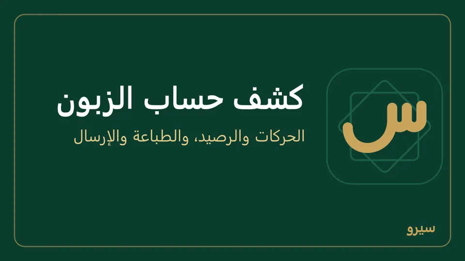
على الجوال: الأرباح والميزانية وملخص اليوم في مجموعة المال والتقارير، والتقارير في مجموعة التقارير، والقيود والحسابات في مجموعة المحاسبة. كشف حساب الزبون: الزبائن ← الزبون ← كشف حساب، واختر هذا الشهر أو هذه السنة أو الكل، ثم مشاركة PDF أو طباعة (كيف).
التقارير ولوحة المالك
- في منشئ التقارير التجميع باليوم أو الشهر يُرتَّب بالتاريخ، ومقارنة بالفترة السابقة تعمل مع تجميع حسب. التقرير المحفوظ يحتاج اسماً جديداً حتى 60 حرفاً، و× بجانبه يحذفه. فوق الجدول سطر «المعروض: …» يذكر البيانات والفترة والطرف والصنف والتجميع، ويُطبع على التقرير أيضاً، فيعرف قارئ الورقة ما فيها.
- لوحة المالك: الرئيسية: المبيعات والربح مقارنة بالفترة السابقة، النقدية، ما لنا وما علينا، المتأخر والمستحق خلال أسبوع، الأكثر مبيعاً والبضاعة الراكدة، والفروع إن وُجدت في التقارير ← الفروع.
- لوحة الهاتف: لمن يفتح المحاسبة. التقارير ← لوحة الهاتف صفحة أرقام للقراءة فقط بمربعات كبيرة، تفتحها من متصفح أي جوال على شبكة المحل: المبيعات ومجمل الربح وصافيه مقارنة بالفترة السابقة، النقدية، النقد بعد التحصيل والسداد، ما يستحق لنا وعلينا (متأخر، خلال 7 أيام، بعد ذلك)، الأكثر مبيعاً، البضاعة الراكدة والفروع. مشاركة الملخص يرسل الأرقام نصاً على واتساب.
- منشئ التقارير: التقارير: اختر البيانات (المبيعات، المشتريات، المرتجعات والإشعارات، تكلفة البضاعة المباعة، حركة المخزون، ولمن يرى المحاسبة: دفتر اليومية، القيود، حركة الصندوق والبنوك، فروقات الصرف، الأرصدة الافتتاحية، أرصدة الزبائن والموردين، ميزان المراجعة بالنظام الموحد، سجل التدقيق، ترحيل البيانات القديمة وأرشيف الفواتير القديمة)، والفترة، وتجميع حسب الصنف أو الطرف أو الشهر، وفعّل مقارنة بالفترة السابقة إن أردت. احفظه باسم ليفتح بضغطة على الكمبيوتر والجوال معاً. Excel وCSV وطباعة / PDF. من لا يرى التكلفة لا تظهر له أعمدتها ولا أعمدة الفترة السابقة منها، ومن لا يرى التكلفة أو أسعار الشراء لا تظهر له أسعار المشتريات ولا أسعار المرتجعات والإشعارات ومجاميعها (فسعر مرتجع الشراء سعر شراء). المبيعات والمشتريات والمرتجعات والتكلفة تُقرأ من القيود: فاتورة من شهر مقفل أُلغيت أو عُدّلت بعده تبقى في شهرها، ويظهر إلغاؤها بالسالب في الشهر الذي أُلغيت فيه.
- الفروع: ما سجّله كل جهاز مرتبط: المبيعات والتكلفة والمصاريف والصافي وحركة النقد. الصافي من كل حسابات الإيرادات والمصاريف، وحركة النقد من كل الصناديق والبنوك وطرق الدفع، فمجموع الفروع يساوي قائمة الدخل والنقدية.
- مراكز الربحية: الإيراد والمصاريف والصافي لكل مركز، وغير موزّع لما لم يُوسم.
- التقرير الضريبي: ضريبة المبيعات وضريبة المشتريات القابلة للخصم في الفترة، والمستحق للدفع.
- ملخص يُرسل وحده كل يوم أو أسبوع أو شهر: التقارير المجدولة.
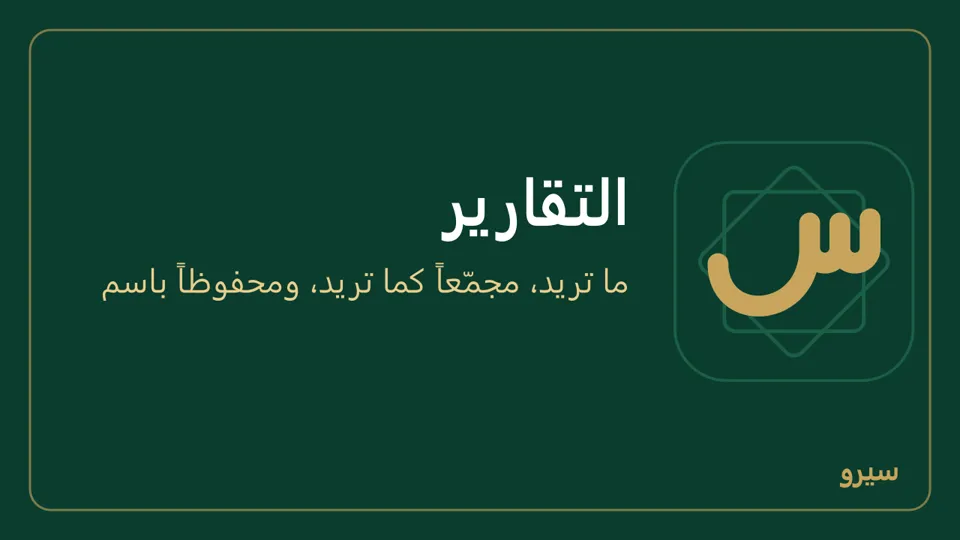
على الجوال: مجموعة التقارير: لوحة المالك (بأرقام الرئيسية نفسها، ومشاركة الملخص يرسلها نصاً على واتساب)، منشئ التقارير (Excel أو CSV عبر المشاركة)، الفروع ومراكز الربحية. كل تقرير يأخذ اليوم أو هذا الشهر أو الشهر الماضي أو هذه السنة، أو فترة أخرى لتكتب من وإلى بنفسك. التقرير المحفوظ يُحذف بإشارة السلة بجانبه.
القوائم المالية: الميزانية وقائمة الدخل
من القوائم المالية في القائمة الجانبية (أو التقارير):
- الميزانية العمومية: ما يملكه المحل (الصندوق، البنك، ديون الزبائن، البضاعة) مقابل ما عليه (الموردون، الضرائب) وحقوق المالك. اختر التاريخ واضغط عرض. الأصول تساوي دائماً الالتزامات وحقوق الملكية.
- قائمة الدخل: الإيرادات ناقص تكلفة المبيعات والمصاريف في المدة التي تختارها، وفي آخرها صافي الربح أو الخسارة.
- مجمل الربح وصافي الربح: مجمل الربح هو المبيعات بعد المرتجعات والخصم ناقص تكلفة البضاعة المباعة، أي ربحك من البضاعة وحدها. صافي الربح هو مجمل الربح ناقص المصاريف (الإيجار، الرواتب، الكهرباء…) وزائد الإيرادات الأخرى، أي ما بقي لك فعلاً. مثال: بعت بـ 1,000 بضاعة كلفتها 700 ودفعت مصاريف 200: مجمل الربح 300 وصافي الربح 100. الاثنان في الرئيسية والتقارير ← الفروع، وصافي الربح في آخر قائمة الدخل.
- ميزان المراجعة: المحاسبة، واختر حتى تاريخ لرصيد يوم معيّن. اضغط اسم حساب لترى دفتره بكل حركة ورصيدها، هذه السنة أولاً، وهذا الشهر أو الكل أو من وإلى لمدة أخرى، ومشاركة يرسله نصاً (لا صفحة طباعة لدفتر الحساب: يُرسل نصاً فقط)، ثم القيد نفسه والمستند الذي صنعه.
- لكل واحدة زر طباعة يطبعها باسم المحل وبياناته، أو يرسلها نصاً.
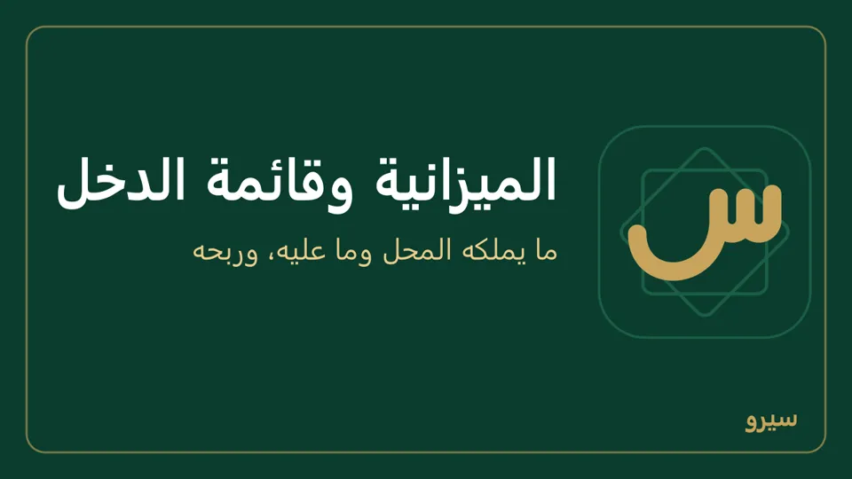
الربح لا يُرحَّل إلى حساب، فيظهر في حقوق الملكية سطرين: أرباح سنوات سابقة وربح السنة حتى التاريخ.
على الجوال: الأرباح والخسائر والميزانية العمومية (وتاريخ آخر لميزانية أي يوم) في مجموعة المال والتقارير، ولكل منهما PDF للمشاركة. المحاسبة ← ميزان المراجعة فيه الحساب ثم القيد كما على الكمبيوتر، وزر مشاركة للميزان ولدفتر الحساب.
دليل الحسابات
كل حساب برمز: 1 الأصول، 2 الالتزامات، 3 حقوق الملكية، 4 الإيرادات، 5 المصاريف، وتحت كل منها حساباته برصيدها.
- دليل الحسابات في القائمة الجانبية.
- اختر تحت المجموعة (مثلاً 5 المصاريف) واكتب اسم الحساب (إيجار المحل) ثم إضافة. الرمز يأتي وحده (57)، وحين تنفد الرموز من رقم واحد يتسع وحده (501، 502…) دون أن يشبه رمز حساب آخر، أو اكتبه في الرمز على أن يبدأ برمز المجموعة، ونوع الحساب من مجموعته. حسابان بالاسم نفسه تحت مجموعة واحدة لا يجتمعان، والاسم حتى 80 حرفاً.
- لحسابات كثيرة من نوع واحد أضف أولاً مجموعة (مصاريف التشغيل) ثم أضف الحسابات تحتها.
- الدليل نفسه لا يُستورد من Excel: تضيف الحسابات هنا. أما أرصدتها أول المدة فتُستورد بملف برمز كل حساب ورصيده: الأرصدة الافتتاحية من Excel.
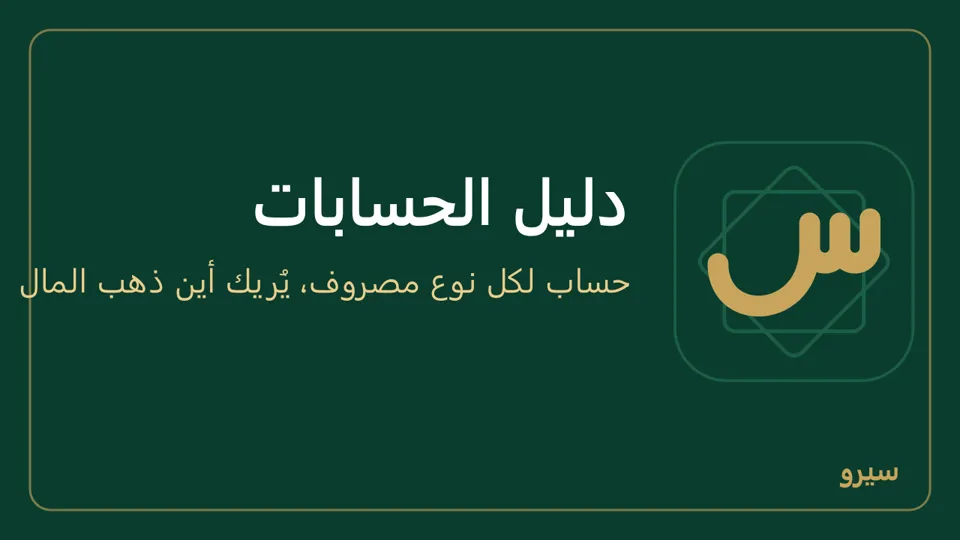
- تغيير الاسم: تعديل بجانب الحساب ← حفظ.
- النظام المحاسبي الموحد: في تعديل اكتب الرمز في النظام الموحد ثم حفظ. رموز البرنامج لا تتغيّر، والرمز الموحد يُكتب بجانبها، ويمكن أن تعطي الرمز نفسه لأكثر من حساب (الصندوق والبنك تحت حساب النقدية الموحد مثلاً). يظهر في عمود الموحد في الدليل. ومن التقارير اختر ميزان المراجعة بالنظام الموحد: سطر لكل رمز موحد بمدينه ودائنه ورصيده حتى آخر الفترة، والحسابات التي تحته، مع Excel وCSV وطباعة / PDF. الحسابات التي لم تعطها رمزاً تجتمع في سطر بلا رمز موحد بأسمائها، فتعرف ما بقي.
- الحذف: لحساب لم يُسجَّل عليه شيء ولا تحته حسابات ولا موازنة ولا طريقة دفع، وليس من الحسابات الأساسية؛ وإلا يقول البرنامج لماذا. ما عليه قيود يبقى، ويمكن تغيير اسمه أو أرشفة الحساب: يختفي من الاختيار ولا يُسجَّل عليه جديد، وتبقى قيوده. يؤرشف حين يكون رصيده صفراً، ويعود بـإعادة من الأرشيف.
لا يُضاف حساب تحت حساب عليه قيود (مثل 52 مصاريف عمومية)، بل تحت مجموعة. بعض الرموز محجوزة لما يُنشئه البرنامج وحده (الخصومات 53، فروقات الجرد 54، فروق الصرف 55…). المحاسب والمالك فقط يريان الدليل والقوائم المالية.
على الجوال: المحاسبة ← دليل الحسابات: حساب جديد في الأعلى (تحت المجموعة واسم الحساب والرمز، ثم إضافة). القلم بجانب الحساب لتغيير اسمه أو الرمز في النظام الموحد (حفظ) أو حذف الحساب؛ إن رُفض الحذف يظهر أرشفة الحساب، والمؤرشف يعود بـإعادة من الأرشيف.
رأس المال والسحب الشخصي
- أول مرة: العمليات اليومية ← رأس مال واكتب المبلغ الموجود في الصندوق اليوم.
- ما تأخذه لنفسك من الصندوق: سحب شخصي. لا يُحسب مصروفاً، فيبقى الربح صحيحاً. وبضاعة تأخذها للبيت: بضاعة للمحل أو للبيت.
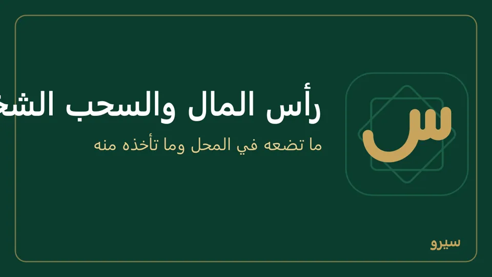
- للمالك والمحاسب.
على الجوال: الصندوق من مجموعة المال والتقارير ← رأس مال / نقد أول المدة أو سحب شخصي، ومعه التاريخ إن لم يكن اليوم.
صندوق الدولار
محل يحفظ الليرات في صندوق والدولارات في آخر: كل صندوق يُرى رصيده بعملته («صندوق الدولار: 350 $»)، ودفتر حسابه في المحاسبة فيه عمود بالدولار بجانب الليرات. سند صندوق الدولار لا يُعدَّل: يُلغى ثم يُسجَّل من جديد.
- أضف الدولار أولاً إلى العملات المستعملة إن لم يكن فيها. ثم الإعدادات ← نقطة البيع: اكتب الاسم (صندوق الدولار)، النوع نقدي والعملة دولار أمريكي (USD)، ثم إضافة.
- اكتب سعر الدولار كل يوم: أسعار الصرف.
- ما في الصندوق من دولارات اليوم: سطر في الأرصدة الافتتاحية من Excel برمز حساب صندوق الدولار والمبلغ بالدولار (300 مثلاً). على الجوال: الصندوق ← رأس مال / نقد أول المدة والمبلغ بالدولار. (قيد يدوي يأخذ المبلغ بالليرة، أي ما تساويه الدولارات.)
- بيع بالدولار: في نقطة البيع اكتب الدولارات في خانة صندوق الدولار؛ إن دفع الزبون أكثر من الفاتورة يُرَدّ الباقي بالليرة من الصندوق السوري.
- قبض أو دفع بالدولار: خانة الصندوق في صفحة الزبون أو المورد عند القبض والدفع.
- تصريف بين الصندوقين: الصناديق أسفل نقطة البيع. عند بيع دولارات يُسجَّل الفرق عن كلفتها ربح صرف أو خسارته. بعده يظهر «تم الصرف … مقابل …» بالسعر الذي خرج منه وسعر اليوم. وإن ابتعد سعرك عن سعر اليوم أكثر من الخُمس (صفر زائد أو ناقص) يسألك قبل الصرف.
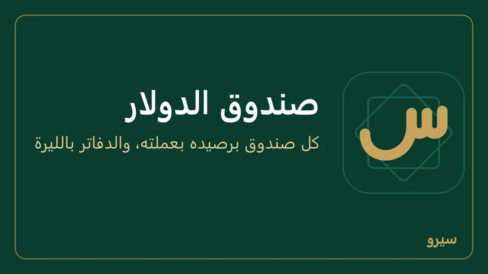
- صندوق دولار ثانٍ (دولارات المحل ودولارات الشريك، أو صندوق لكل فرع): أضفه كالأول باسم آخر (الإعدادات ← نقطة البيع، على الجوال بيانات المحل ← طرق الدفع بالنوع نقدي والعملة). في فاتورة بالدولار نقدي يدخل الصندوق الأول، والثاني يظهر باسمه في طريقة الدفع (على الجوال بجانب نقدي وآجل).
الصندوق نفسه يصلح لأي عملة من العملات المستعملة: ليرة تركية، دينار، درهم… كل صندوق بعملته.
كل مبلغ بالدولار يُسجَّل في الدفاتر بالليرة بسعر يومه، فتبقى الأرباح والميزانية بعملة واحدة. والدولارات تخرج من الصندوق (دفع لمورد، مصروف، سحب، باقٍ أو مرتجع) بكلفتها فيه كما كان في تاريخ الحركة، والفرق عن سعر يومها ربح صرف أو خسارته في «فروق صرف»، فالصندوق الفارغ رصيده صفر بالليرة أيضاً. وما يخرج أكثر مما في الصندوق يخرج بسعر يومه. إعادة التقييم آخر الشهر تشمل صندوق الدولار ولا تغيّر عدد دولاراته. سند الدولار الخاطئ يُلغى ثم يُسجَّل من جديد.
على الجوال: الصندوق ← إضافة صندوق دولار أو عملة أخرى واختر العملة، وسعر اليوم في الصندوق ← سعر دولار أمريكي اليوم. ما فيه الآن: رأس مال / نقد أول المدة واختر صندوق الدولار. في بيع بالكاميرا زر دفع بالدولار، وفي القبض والدفع والمصروف اختر صندوق الدولار واكتب المبلغ بالدولار. التصريف: صرف بين الصندوقين.
العملات التي تتعامل بها
الدفاتر كلها بعملة الدفاتر (الليرة السورية، أو الدولار إن اخترته عند الإنشاء)، وتبيع وتشتري وتحفظ صناديق بأي عملة أخرى تضيفها: الليرة التركية، الجنيه المصري، اليورو، الدينار الأردني أو العراقي أو الكويتي، الدرهم الإماراتي أو المغربي، الريال السعودي أو القطري…
- على الكمبيوتر: الإعدادات ← التوطين ← العملات المستعملة، اختر من إضافة عملة ثم إضافة.
- اكتب سعرها: أسعار الصرف.
- تظهر العملة بعدها في الفاتورة، وعملة المورد، وصندوق الكاشير، وفاتورة الشراء على الجوال.
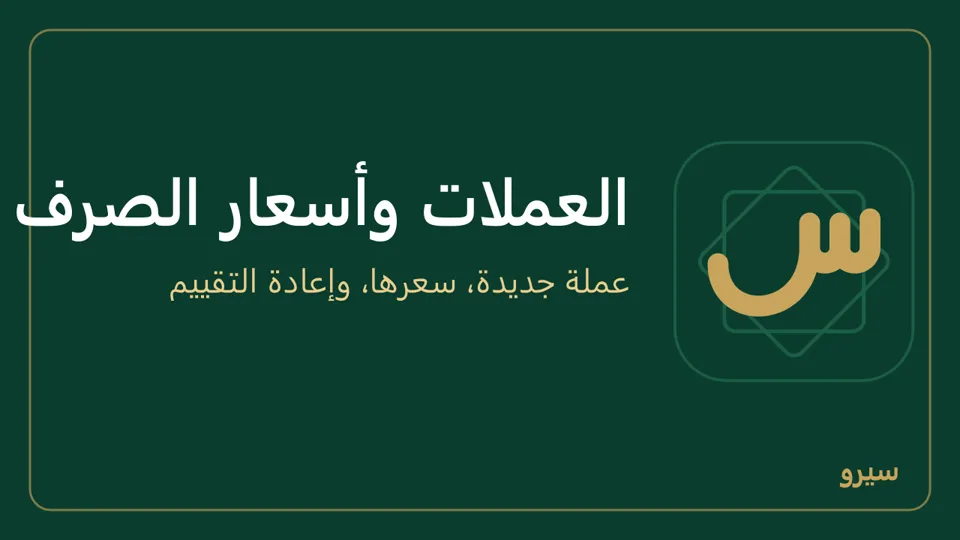
- رصيد الزبون والمورد بعملاته: من له فاتورة بالدولار لم تُسدَّد يظهر رصيده بالعملتين، مثل «لنا 100 $ + 50,000 SYP»، في قائمة الأسماء وصفحته وكشف حسابه (الرصيد اليوم بعملاته) على الكمبيوتر والجوال. الدولارات هي ما بقي من فواتيره بالدولار، والليرات هي الباقي. الدفاتر تبقى بالليرة، فالمجموع في كشف الحساب بالليرة بسعر يوم كل فاتورة.
الدفاتر بالليرة السورية الجديدة، والليرة 100 قرش، فالمبالغ والضريبة تُحسب حتى القرش. الليرة القديمة ليست عملة تعامل: تدخل فقط باستيراد الدفاتر القديمة.
العملة وطريقة الدفع في الفاتورة الجديدة
تختار بأي عملة تبدأ الفاتورة الجديدة وكيف تُدفع، للبيع وللشراء كلٌّ وحده، على كل أجهزة المحل.
- على الكمبيوتر: الإعدادات ← التوطين ← بداية الفاتورة الجديدة. تحت البيع وتحت الشراء: العملة (عملة الدفاتر أو إحدى العملات المستعملة)، وطريقة الدفع: على الحساب أو نقدي أو طريقة دفع مثل شام كاش.
- اضغط حفظ.
- تبدأ بها كل فاتورة جديدة، وعرض السعر والطلب بالعملة نفسها، وتغيّرها في الفاتورة نفسها متى شئت. الفواتير المحفوظة لا تتغير.
- الدفاتر تبقى بالليرة: فاتورة بالدولار تُقيَّد بالليرة بسعر صرفها (كيف).
- على الحساب يحتاج زبوناً أو مورداً: بيع بلا زبون يبدأ نقدي ويصير على الحساب حين تختار الزبون.
- اقترح آخر سعر بعته لهذا الزبون تحت البيع: حين تختار زبوناً يبدأ سعر كل صنف بآخر سعر بعته له إياه، بالوحدة والعملة نفسيهما، بدل سعر الصنف أو قائمة الأسعار. من دونه يظهر «آخر سعر بعته له» تحت السعر فقط، ولا يتغيّر السعر. تغيّره في السطر إن أردت. صنف لم تبعه له من قبل يبدأ بسعره المعتاد. وعلى الجوال المفتاح نفسه في بيانات المحل ← بداية الفاتورة الجديدة.
- رتّب الزبائن حسب خط المسير تحت البيع (للموزّع والمندوب): في قائمة الزبائن بفاتورة البيع ينزل من بعته للتو إلى آخرها، فيبقى الزبون التالي على خطك في أعلاها. من لم تبعه بعد يبقى في الأعلى بترتيب الأسماء، وبعد جولة واحدة تتبع القائمة ترتيب خطك. فاتورة ملغاة لا تُحسب. على الجوال المفتاح نفسه، ومندوب يرى زبائن خطه قبل غيرهم.
- أعمدة «استعلام عن مادة» تحت البيع وتحت الشراء: ما يظهر بجانب كل صنف في نافذة الاستعلام: الموجود، وسعر البيع بعملته، وسعر البيع بكل عملة من العملات المستعملة بسعر صرف اليوم، وكل قائمة أسعار، وآخر سعر شراء، والتكلفة. آخر سعر شراء والتكلفة لا يراهما إلا من يرى التكلفة. وعلى الجوال تظهر الأعمدة نفسها تحت كل صنف حين تضيفه إلى الفاتورة.
على الجوال: بيانات المحل ← بداية الفاتورة الجديدة، الخيارات نفسها، ومعها أعمدة «استعلام عن مادة». فاتورة الشراء على الجوال تُدفع نقداً أو آجلاً فقط: إن اخترت للشراء طريقة دفع أخرى تبدأ فيها آجل وتدفعها بعدها.
العملات التي اخترتها عند أول تشغيل هي البداية. عملة لا تتعامل بها احذفها؛ أما عملة عليها فاتورة أو صندوق أو سعر صرف فتبقى، لأن مستنداتها تقرأ منها. المبالغ تُكتب بكسور العملة: ثلاث خانات للدينار الكويتي، ولا كسور للدينار العراقي.
على الجوال: بيانات المحل ← العملات المستعملة ← إضافة عملة، والسعر من المحاسبة ← أسعار الصرف.
سند قبض وسند صرف
كل مال يدخل الصندوق أو يخرج منه بسند واحد، أياً كان الطرف.
- افتح السندات من المال والإدارة (للمالك والمحاسب).
- اختر سند قبض أو سند صرف، ثم الطرف:
- سند قبض: من زبون، أو من مورد (مبلغ ردّه)، أو من موظف (سداد سلفة)، أو إيراد آخر (عمولة، إيجار تقبضه…). - سند صرف: لمورد، أو لزبون (ردّ مبلغ)، أو سلفة لموظف، أو مصروف (إيجار، كهرباء، مازوت…).
- اختر الاسم أو الحساب، واكتب المبلغ والتاريخ وملاحظة (تُطبع على السند)، ثم تسجيل سند القبض أو تسجيل سند الصرف. مع زبون أو مورد يظهر تحت المبلغ وأنت تكتبه «رصيده بعد السند: عليه …» أو «له …»، فمبلغ بصفر زائد يُرى قبل التسجيل (على الكمبيوتر والجوال).
- الرسالة الخضراء تقول ما سُجّل: نوع السند ورقمه ومبلغه والزبون أو المورد، فتنتبه لاسم أو مبلغ خطأ في الحال (تعديله أو إلغاؤه). طباعة السند فيها، أو طباعة بجانبه تحت آخر السندات. إن رُفض السند يظهر السبب تحت الخانات ويبقى ما كتبته. ورجوع من سند على الجوال وفيه مبلغ مكتوب يسأل قبل أن يضيع.
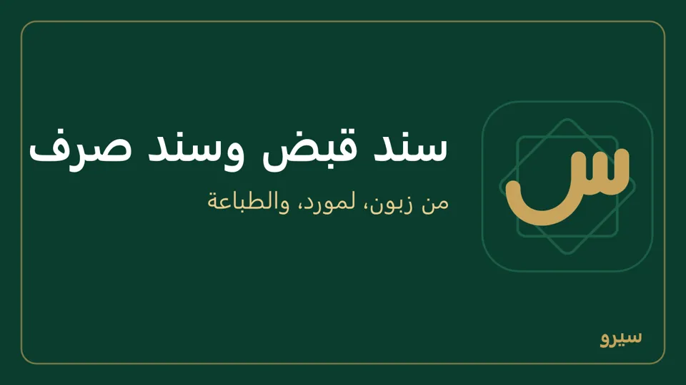
- القبض من زبون والدفع لمورد يسدّدان فواتيره الأقدم استحقاقاً أولاً. لتختار الفواتير بنفسك سجّله من صفحة الزبون أو المورد.
- المصروف والإيراد: الحسابات من دليل الحسابات: حساب لكل نوع مصروف (إيجار، كهرباء) يُريك في القوائم المالية أين ذهب المال. وفيه المركز إن كانت لك مراكز ربحية.
- قسط قرض: ليظهر في قائمة الدخل مصروفاً: أضف حساباً تحت 5 في دليل الحسابات («أقساط القروض» مثلاً)، ثم سند صرف ← مصروف على هذا الحساب. الأدق محاسبياً أن الفائدة وحدها مصروف وأصل القرض دين ينقص: سجّل القرض حين تأخذه وكل قسط بـقيد يدوي (حساب القرض مدين بالأصل، وحساب الفوائد مدين بالفائدة، والصندوق دائن).
- لا يظهر موظفون في القائمة؟ أضفهم أولاً من الموظفون والرواتب بأسمائهم ورواتبهم. لا تجد هذا القسم؟ فعّله من الإعدادات ← الأقسام (على الجوال: بيانات المحل ← الأقسام). السند يقول ذلك ويأخذك إليه حين لا يكون موظفون بعد، إن كان دورك يفتحه؛ وإلا يقول من يفعل ذلك («يضيفهم المالك أو مسؤول الموارد البشرية من «الموظفون والرواتب»» أو «يفعّل المالك قسم «الموظفون والرواتب» من الإعدادات ← الأقسام»).
- السلفة: تبقى على الموظف حتى تُحسم من راتبه عند صرف الرواتب، أو يردّها بسند قبض من موظف (سداد سلفة)، ولا يُقبض منه أكثر مما عليه.
- صندوق الدولار؟ اختر الصندوق (بجانب اسمه سعر اليوم) واكتب المبلغ بالدولار (صندوق الدولار). الرسالة الخضراء تذكر الدولارات وسعرها وما تساويه بالليرة.
- سند خاطئ؟ تعديل أو إلغاء بجانبه (كيف). السلفة التي حُسم منها شيء في الرواتب لا تُلغى؛ ما بقي منها يُحسم أو يُقبض.
على الجوال: السندات من مجموعة المال والتقارير: سند قبض أو سند صرف، ثم الطرف والاسم (لا زبائن أو موردون بعد؟ يظهر الزبائن أو الموردون لتضيفهم ثم ترجع)، والمبلغ، ثم تسجيل سند القبض أو تسجيل سند الصرف، ومشاركة PDF لإرسال السند. التعديل والإلغاء من الصندوق ← آخر السندات.
تعديل سند أو إلغاؤه
- في السندات تحت آخر السندات، أو في العمليات اليومية تحت آخر العمليات، اضغط تعديل أو إلغاء بجانب السند (للمالك والمحاسب). أو افتحه من صفحة الزبون أو المورد أو دفتر الحساب.
- للتعديل اكتب المبلغ أو التاريخ الصحيح وسبب التعديل واضغط حفظ التعديل. للإلغاء افتح إلغاء السند، اكتب سبب الإلغاء ثم تأكيد الإلغاء.
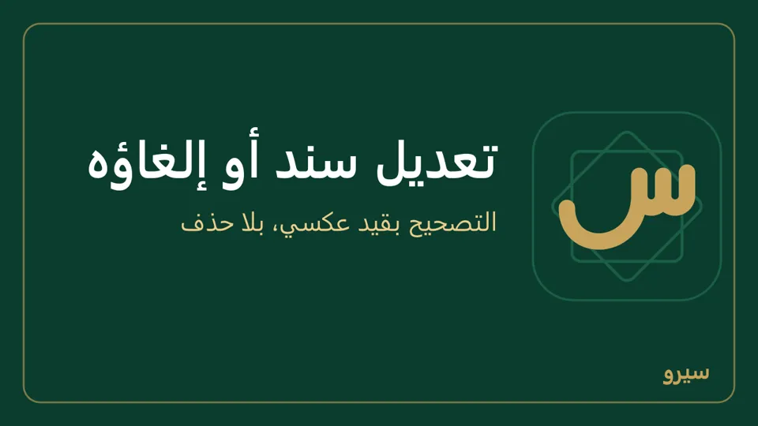
- السند لا يُسجَّل مرتين ولو ضُغط الزر مرتين أو انقطع الاتصال وأُعيد الإرسال. وإن ظهرت «حُفظ هذا النموذج من قبل، وما أدخلته الآن لم يُسجَّل» فقد حُفظ النموذج بما كان فيه قبل تغييرك: راجع آخر السندات، ثم افتح الشاشة من جديد وأدخل ما لم يُسجَّل.
- التعديل يبقي السند على صندوقه (عهدة المندوب أو صندوق آخر) وعلى الفواتير التي سدّدها، وما زاد على المبلغ يذهب إليها أولاً ثم إلى الأقدم.
- سند في سنة مقفلة أو فترة مقفلة يُلغى بقيد عكسي بتاريخ اليوم.
لا شيء يُحذف: يُلغى السند بقيد عكسي ويبقى ظاهراً في كشف الحساب، والفاتورة التي سدّدها تعود مفتوحة.
على الجوال: من الصندوق: القلم لتعديل المبلغ والتاريخ والزبون أو المورد والملاحظة مع سبب التعديل، والإشارة للإلغاء.
الشيكات المؤجلة
شيك الزبون يسدّد فواتيره يوم تستلمه، فينزل رصيده فوراً، ويبقى المبلغ في حساب «أوراق القبض» حتى يدفعه البنك. والشيك الذي تكتبه لمورد يسدّد فواتيره يوم تسلّمه، ويبقى في «أوراق الدفع» حتى يخرج من حسابك في البنك.
- افتح الشيكات من المال والإدارة (للمالك والمحاسب)، واختر شيكات مستلَمة أو شيكات صادرة.
- استلام شيك (أو كتابة شيك لمورد): اختر الاسم، واكتب المبلغ ورقم الشيك والبنك وتاريخ الاستحقاق المكتوب على الشيك، ثم تسجيل الشيك المستلَم أو تسجيل الشيك الصادر. يُسدَّد الأقدم استحقاقاً من فواتيره، والزائد يبقى رصيداً له. سند القبض بجانب الشيك يطبع إيصالاً للزبون فيه رقم الشيك وبنكه وتاريخه. لا زبائن (أو لا موردين) بعد؟ تحت الاسم «لا زبائن بعد» أو «لا موردين بعد» مع رابط إلى العملاء والموردون؛ وعلى الجوال اكتب الاسم في بحث القائمة واضغط إضافة.
- في الأعلى ما ينتظر البنك، وما يستحق خلال أسبوع، وما مضى استحقاقها (بالأحمر في القائمة). القائمة مرتّبة بتاريخ الاستحقاق.
- حين يتحرّك الشيك اضغط إجراء بجانبه:
- إيداع في البنك: سلّمته للبنك ليحصّله. لا يدخل البنك شيء بعد. بلا طريقة دفع بنكية يظهر مكانه «لا حساب بنكي للإيداع: …» ومعه طرق الدفع للمالك. - تحصيل: دفعه البنك. اختر الحساب الذي دخله المبلغ (البنك الذي أودعته فيه، أو الصندوق إن قبضته نقداً). للشيك الصادر: صُرف من البنك. - تجيير لمورد: أعطيت شيك الزبون لمورد، فيسدّد فواتير المورد. - ارتجاع: رجع الشيك بلا رصيد. اكتب تاريخ الارتجاع والسبب: يعود المبلغ ديناً على الزبون وتعود فواتيره مفتوحة. الشيك المجيَّر إن ارتجع يعود المبلغ للمورد على حسابك، وعلى الزبون لك. - إلغاء (سُجّل خطأً): شيك لم يكن. يُلغى بتاريخ تسجيله. - التراجع عن التحصيل (أو عن الإيداع أو التجيير): ضغطة خاطئة. ثم تكمل من جديد. - حفظ التفاصيل: رقم أو بنك كُتب خطأً، أو تاريخ استحقاق اتفقتما على تأجيله. المبلغ والاسم لا يتغيّران: ألغِ الشيك وسجّله من جديد.
- بعد كل خطوة يظهر أعلى الصفحة رقم الشيك ومبلغه وحالته الجديدة والاسم، فتتأكد أنك حرّكت الشيك المقصود.
- لا يُحذف شيء: كل خطوة قيد في الدفاتر، والإلغاء والارتجاع قيد عكسي مع سببه في سجل التدقيق. ورصيد «أوراق القبض» في القوائم المالية يساوي دائماً مجموع الشيكات التي تنتظر البنك.
- الشيك الذي ارتجع ثم أعاده الزبون: سجّله من جديد بالرقم نفسه.
- الشيك وسنده لا يُلغيان من السندات ولا من كشف الحساب: من الشيكات فقط.
- فاتورة مسدّدة بشيك تُلغى بعد ارتجاع الشيك أو إلغائه.
على الجوال: الشيكات من مجموعة المال والتقارير: شيكات مستلَمة أو شيكات صادرة، ثم استلام شيك. اضغط على الشيك فتظهر خطواته تحته: تحصيل وإيداع في البنك وتجيير، وارتجاع وإلغاء (سُجّل خطأً) والتراجع عن الخطوة الأخيرة بعد كتابة السبب. شيك مفتوح كُتب رقمه أو بنكه أو استحقاقه خطأً: اضغطه وصحّح رقم الشيك والبنك والاستحقاق ثم حفظ التفاصيل.
قفل فترة
بعد تسليم حسابات شهر أو سنة: المحاسبة ← قفل الفترة حتى واختر التاريخ ثم حفظ، ووافق على السؤال، فلا يُسجَّل شيء بتاريخه أو أقدم منه: لا قيد ولا حركة مخزون (تحويل بين المستودعات، جرد، أمر إنتاج، فحص جودة، رصيد افتتاحي لصنف). التصحيح بعدها يُسجَّل بتاريخ لاحق. للفتح امسح التاريخ واحفظ (يسألك أيضاً). المالك وحده يقفل الفترة أو يفتحها، وكل قفل أو فتح يُسجَّل في سجل التدقيق، وبجانب الخانة «مقفلة حتى …» ومن قفلها ومتى.
- يُقفل ما انتهى فقط: آخر تاريخ يُقبل هو أمس، فلا يتوقف البيع اليوم، والتقويم لا يعرض ما بعده.
- ما قبل آخر يوم من سنة مقفلة يبقى مقفلاً ولو مُسح التاريخ؛ يُفتح بـإعادة فتح السنة فقط.
- السنة المالية الجديدة تُفتح وحدها في أول يوم منها، فلا يتوقف البيع في 1 كانون الثاني.
- القفل للشركة كلها: يصل إلى كل الأجهزة بالمزامنة، فلا يسجّل فرع في فترة أقفلها المركز. وما سجّله فرع دون اتصال قبل أن يصله القفل يبقى، ويظهر في التعارضات.
- القيد المسجَّل لا يُحذف ولا تتغيّر مبالغه: التصحيح بقيد عكسي أو بتعديل المستند، ويبقى الأصل ظاهراً.
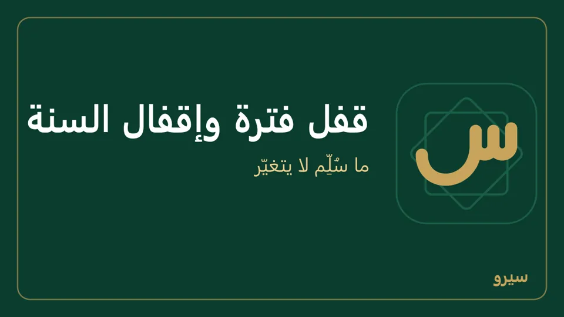
على الجوال: المحاسبة ← ميزان المراجعة ← قفل الفترة، اكتب التاريخ (17/10/2026) واضغط قفل، وفتح الفترة للفتح. على جوال يدخل إليه أكثر من مستخدم يظهر القفل والفتح للمالك وحده.
إقفال السنة المالية
بعد مراجعة حسابات السنة: المحاسبة ← السنوات المالية ← إقفال السنة. يظهر ما سيحدث وربح السنة أو خسارتها، ثم تأكيد الإقفال.
- تُقفل السنة بعد انتهائها: سنة تنتهي في 31/12/2026 تُقفل من 01/01/2027.
- السنوات تُفتح وحدها حتى آخر السنة القادمة. تاريخ أبعد (2030 بدل 2026 مثلاً) يُرفض: «التاريخ بعيد جداً عن السنوات المفتوحة؛ تأكّد من السنة المكتوبة في التاريخ».
- تُقفل السنوات بالترتيب، وبعد أن يُقرَّر في كل مستند منها ينتظر الموافقة. سنة لا تُقفل بعد يظهر مكان الزر سبب ذلك.
- الإقفال يمنع أي قيد في السنة، ويقفل الفترة حتى آخر يوم منها، ويسجّل من أقفل ومتى وأرقام السنة.
- إعادة فتح للمالك وحده، لآخر سنة مقفلة، بسبب يُكتب في سجل التدقيق. إن كان قفل الفترة بعد نهاية السنة تُرفض إعادة الفتح حتى تُرجع القفل إلى آخر يوم منها، فلا تُفتح فترة لاحقة دون قصد.
على الجوال: المحاسبة ← ميزان المراجعة، واضغط السنة (للمالك وحده حين يدخل إلى الجوال أكثر من مستخدم). السنة التي لا تُقفل بعد يُكتب تحتها السبب.
قيد يدوي
لأرصدة أول المدة (البنك، رأس المال، حساب قديم) وللتسويات التي لا تغطيها العمليات اليومية. المبالغ بعملة الدفاتر وحدها: لا يوجد حالياً اختيار عملة في القيد اليدوي، فاكتب ما يساويه المبلغ الأجنبي بعملة الدفاتر. لقبض أو دفع بالدولار استعمل سند قبض أو سند صرف واختر صندوق الدولار واكتب المبلغ بالدولار.
- المحاسبة ← قيد يدوي، واكتب التاريخ والبيان.
- لكل سطر اختر الحساب واكتب المبلغ في مدين أو دائن، وسطر آخر لما تحتاج (× يحذف سطراً). تحت الأسطر مجموع المدين والدائن، ومتوازن أو الفرق (المدين أكثر بـ أو الدائن أكثر بـ) وأنت تكتب. سطر حساب العملاء أو الموردين يحتاج الطرف (الزبون أو المورد) ليظهر في كشف حسابه، والطرف لا يُختار على أي حساب غيرهما: شطب دين زبون مثلاً سطر مصروف بلا طرف وسطر عملاء بالزبون. خانة الطرف لا تُفتح إلا على هذين الحسابين، وسطر منهما بمبلغ وبلا طرف يقول «اختر الزبون أو المورد» قبل الترحيل. أكمل بالفرق يكتب الفرق في أول سطر فارغ في الجهة التي توازن القيد، فلا تكتب المبلغ مرتين؛ اختر حسابه بعدها. Enter ينقلك من الحساب إلى المبلغ ثم إلى السطر التالي (وبعد آخر سطر إلى سطر جديد) ولا يرحّل القيد، و↑ و↓ ينقلانك في العمود نفسه دون أن يغيّرا الحساب المختار (لوحة المفاتيح).
حساب العملاء أو الموردين بلا أي زبون أو مورد بعد: تحت السطر «لا زبائن ولا موردون بعد» مع رابط إلى العملاء والموردون؛ وعلى الجوال اكتب الاسم في بحث الطرف واضغط إضافة.
- إن كان عندك مراكز اختر مركز التكلفة (تسوية لفرع حلب مثلاً): يُعلَّم به كل سطر، وفارغاً يأخذ مركز هذا الجهاز. مجموع المدين يساوي مجموع الدائن، ثم ترحيل القيد. قيد رُفض يبقى بأسطره كما كتبتها، والسبب فوقها: صحّح ورحّل.
- لا يخرج من صندوق أكثر مما فيه: سطر دائن على الصندوق أكبر من رصيده يُرفض ويذكر الرصيد (صفر زائد بالخطأ). البنك قد يكون مكشوفاً فلا يُرفض في القيد اليدوي.
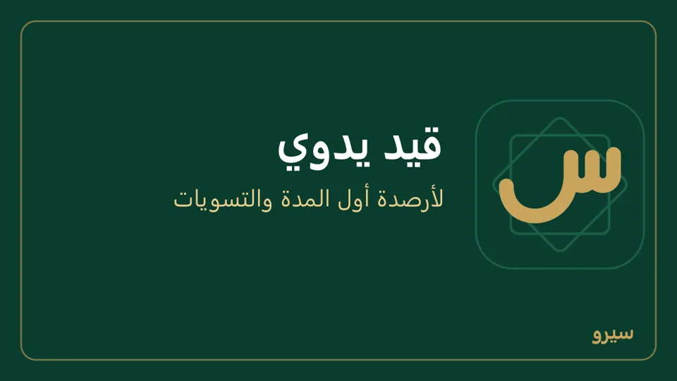
على الجوال: المحاسبة ← قيد يدوي: مركز التكلفة إن كان عندك مراكز، ولكل سطر الحساب، مدين أو دائن، والمبلغ، وسطر آخر لما تحتاج. في الأسفل يظهر الفرق حتى يتوازن، وأكمل بالفرق يكتبه في أول سطر فارغ (أو سطر جديد) في الجهة التي توازن. سطر عملاء أو موردين بلا طرف يقول «اختر الزبون أو المورد».
القيد الخاطئ لا يُحذف: افتحه من دفتر الحساب واضغط إلغاء القيد، فيُسجَّل قيد عكسي ويبقى الاثنان ظاهرين. قيد صنعه البرنامج من شيء غير الفاتورة والسند لا يُلغى من صفحته، وتقول الصفحة أين يُصحَّح: قيد شيك «يُصحَّح من «الشيكات»…»، والرواتب بـ«إلغاء رواتب» الشهر، والجرد بجرد جديد، وأمر الإنتاج بـ«عكس الأمر»، والباقي (الإهلاك وإعادة التقييم وغيرهما) «قيد يولّده البرنامج لا يُلغى من هنا: يُصحَّح بقيد يدوي بتاريخ لاحق» ومعه قيد يدوي.
سطر دائن على صندوق الدولار يُخرج دولاراته بكلفتها في الصندوق، فيضيف البرنامج إلى القيد سطراً على «فروق صرف» بالفرق عن المبلغ المكتوب.
البنك ومطابقة الكشف
- المحاسبة ← البنك والمطابقة: إن كان عندك أكثر من حساب بنك أو بطاقة أو تحويل بنكي (طرق الدفع) اختر الحساب في الأعلى. ثم إيداع من الصندوق إلى البنك أو سحب من البنك إلى الصندوق بالمبلغ والتاريخ. بعدها يظهر أعلى الصفحة القيد المسجَّل برقمه ومبلغه. لا يخرج من الصندوق أو البنك أكثر مما فيه: يُرفض ويذكر الرصيد.
- حين يصلك كشف البنك علّم الحركات التي ظهرت فيه واضغط اعتماد المطابقة. ما بقي بلا علامة شيك أو حوالة في الطريق، أو شيء نسيت تسجيله.
- أو اختر ملف الكشف (CSV أو Excel: التاريخ، المبلغ أو إيداع وسحب، البيان) وطابق آلياً: كل سطر بنفس المبلغ خلال ثلاثة أيام يُعلَّم وحده، وما لا مقابل له يُعرض لتسجّله. ملف لا يُعرف فيه عمود المبلغ يُرفض ويذكر أعمدته.
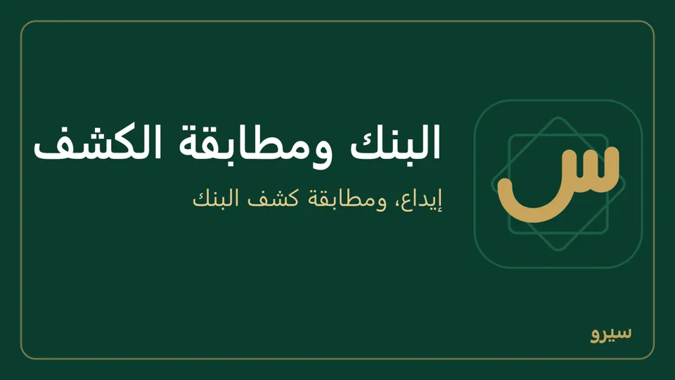
- علامة وُضعت خطأً: تحت ما طوبق من قبل علّم السطر واضغط إلغاء المطابقة، فيعود إلى الحركات المفتوحة.
- دفتر الحساب يفتح كل حركات الحساب ورصيده بعد كل حركة.
- اكتب رصيد الكشف لترى الفرق عن المطابَق: عمولة بنكية أو إيداع لم يُسجَّل يُسجَّلان بقيد يدوي.
على الجوال: المحاسبة ← البنك: الحساب في الأعلى إن كان عندك أكثر من حساب، وبين الصندوق والبنك للإيداع والسحب، ومطابقة كشف البنك بمفتاح بجانب كل حركة، أو ملف كشف البنك (CSV أو Excel). وتحت ما طوبق من قبل مفتاح لكل سطر ثم إلغاء المطابقة.
الموازنة ومراكز الربحية
- المركز وسم على القيود: فرع أو قسم أو خط إنتاج. أضفه من المحاسبة ← الموازنة والمراكز، واختر المركز الافتراضي لهذا الجهاز فيُوسم به كل ما يُسجَّل عليه.
- الموازنة: لكل حساب إيراد أو مصروف مبلغ لكل شهر، للشركة كلها أو لمركز. تحتها الموازنة مقابل الفعلي: بالأحمر تجاوز في المصاريف أو نقص في الإيرادات.
- تقرير المراكز: التقارير ← مراكز الربحية: الإيراد والتكلفة والمصاريف والصافي لكل مركز.
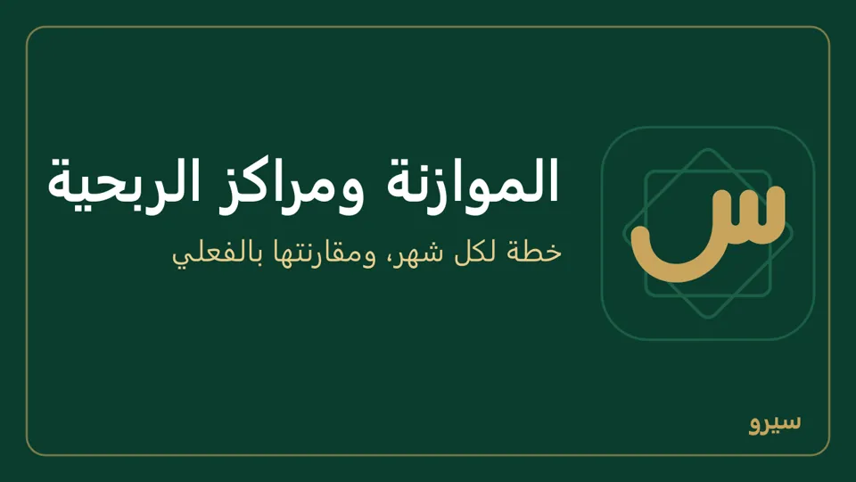
على الجوال: المحاسبة ← الموازنة والمراكز: المراكز، ثم اضغط حساباً لتكتب موازنته شهراً شهراً (أو نفس المبلغ كل شهر)، وفي الأسفل الفعلي وتقرير المراكز.
الموازنة خطة فقط: لا تمسّ الدفاتر ولا الأرباح.
الأصول الثابتة والإهلاك
- الصيانة والأصول ← تسجيله كأصل ثابت في الدفاتر: التكلفة وتاريخ الشراء والعمر بالأشهر والقيمة المتبقية، والدفع نقداً أو آجلاً لمورد.
- آخر كل شهر ترحيل الإهلاك: ترحيل إهلاك شهر يبدأ بالشهر الذي بعد آخر إهلاك مرحّل، والزر يسألك بالشهر وعدد الأصول ومجموع قسطها قبل الترحيل. قسط ثابت لكل أصل قائم، والشهر الذي لم يأتِ لا يُرحَّل. الشهر المرحّل لا يُرحَّل مرتين، ويقول البرنامج «إهلاك أيلول 2026 مُرحّل من قبل». أصل عليه إهلاك بتاريخ بعد استبعاده لا يُستبعد حتى يُلغى ذلك القيد.
- عند بيع الأصل أو إتلافه استبعاد… بجانبه: تاريخ الاستبعاد وثمن البيع (فارغ أو صفر للإتلاف)، وعلّم التأكيد ثم استبعاد الأصل. الفرق عن قيمته الدفترية ربح أو خسارة، والاستبعاد لا يُلغى إلا بقيد عكسي.
على الجوال: المحاسبة ← الأصول الثابتة: أصل جديد في الأسفل، ترحيل الإهلاك بالشهر (10/2026)، واضغط الأصل لاستبعاده.
التكلفة ومجمع الإهلاك والقيمة الدفترية تُقرأ من الدفاتر (14 و15)، فتطابق الميزانية دائماً.
دفاتر بالدولار
شركات كثيرة تمسك دفاترها بالدولار حفاظاً على رأس المال، وتتعامل بالليرة يومياً. تختار ذلك مرة واحدة عند إنشاء الشركة: عملة الدفاتر ← الدولار الأمريكي (أول تشغيل).
- القيود والمخزون والتكلفة والأرباح والقوائم المالية كلها بالدولار، فهبوط الليرة لا يظهر ربحاً ليس حقيقياً.
- الليرة عملة تداول كأي عملة أخرى: فاتورة بالليرة، وعميل أو مورد بالليرة، وصندوق الليرة الذي يُنشأ وحده مع الشركة.
- سعرها يُكتب كما يُتداول: كم ليرة للدولار (مثلاً 110)، في أسعار الصرف والفاتورة والقبض والصندوق، على الكمبيوتر والجوال.
- ما يُقبض بالليرة بعد هبوطها يُرحَّل فرقه إلى «فروق صرف» خسارةً، وإعادة تقييم آخر الشهر تقيّم صندوق الليرة وفواتيرها المفتوحة بسعر اليوم.
- محل موجود بالليرة: يبقى بالليرة. لتبدأ بالدولار: ابدأ من الصفر (كيف)، ثم الدولار الأمريكي في عملة الدفاتر عند الإعداد. المحل القديم يُحفظ جانباً كاملاً ويمكن إرجاعه.
- التقارير بالدولار: التقارير والقوائم المالية بعملة الدفاتر دائماً. في دفاتر بالليرة لا يوجد عرض للتقارير كلها بالدولار؛ ما يُعرض بالدولار هو الفاتورة بالدولار نفسها، وصندوق الدولار، وعملة ثانية على المستند في قوالب الطباعة. لتقارير كاملة بالدولار تحتاج دفاتر بالدولار من البداية.
عملة الدفاتر لا تتغير بعد الإنشاء، وبيانات الشركات الموجودة لا تُحوَّل. استيراد الدفاتر القديمة بالليرة القديمة متاح فقط في الدفاتر بالليرة، ومتجر ديكس يُربط بشركة عملة دفاترها عملة المتجر نفسها.
أسعار الصرف وإعادة التقييم
- السعر: الإعدادات ← التوطين ← أسعار الصرف: العملة والتاريخ وكم ليرة للوحدة. في دفاتر بالدولار تكتب الليرة كما يُتداول سعرها: كم ليرة للدولار. الفاتورة بعملة أخرى تُحوَّل بسعر يومها (أو آخر سعر قبله). أما الصنف المسعّر بالدولار فيحتاج سعر اليوم نفسه ليُباع.
- إعادة التقييم آخر الشهر: إعادة تقييم بتاريخ آخر يوم: الفواتير المفتوحة بعملة أجنبية وصناديق العملات تُقيَّم بسعر اليوم، والفرق يُرحَّل إلى «فروق صرف» ويُعكس وحده في اليوم التالي. قبل الترحيل يظهر ما سيحدث: كم فاتورة مفتوحة وكم صندوقاً، و«صافي الفرق: ربح» أو «خسارة» بمبلغه، أو «لا فرق، فلا قيد»، ويسألك به. إعادة التقييم بتاريخ مضى تأخذ ما كان مفتوحاً في ذلك اليوم: الفاتورة التي دُفعت بعده تُقيَّم، والتي صدرت بعده لا. تُعاد مرة واحدة لكل تاريخ، فالضغط مرتين لا يضاعف الفرق، ولا إعادتها على جهازين قبل أن يتزامنا (المزامنة).
- فاتورة آجلة بعملة أجنبية: القبض عليها ومرتجعها وإشعارها يُنقص كلٌّ منها ما بقي عليها بعملتها، وفرق القروش بين المبلغ بالليرة وما أنقصه بسعر الفاتورة يُرحَّل إلى «فروق صرف»، فيبقى رصيد الزبون أو المورد مساوياً لما بقي على فواتيره.
على الجوال: المحاسبة ← أسعار الصرف: سعر صرف لأي عملة وأي يوم، آخر الأسعار، وإعادة تقييم، أو سعر اليوم في الصندوق أو في فاتورة الشراء. المالك وحده يكتب الأسعار ويعيد التقييم.
التقرير الضريبي
التقارير ← التقرير الضريبي، واختر المدة: المبيعات الصافية وضريبتها، والمشتريات وما يُخصم من ضريبتها، وفي الأسفل المستحق للدفع أو رصيد لصالح المنشأة.
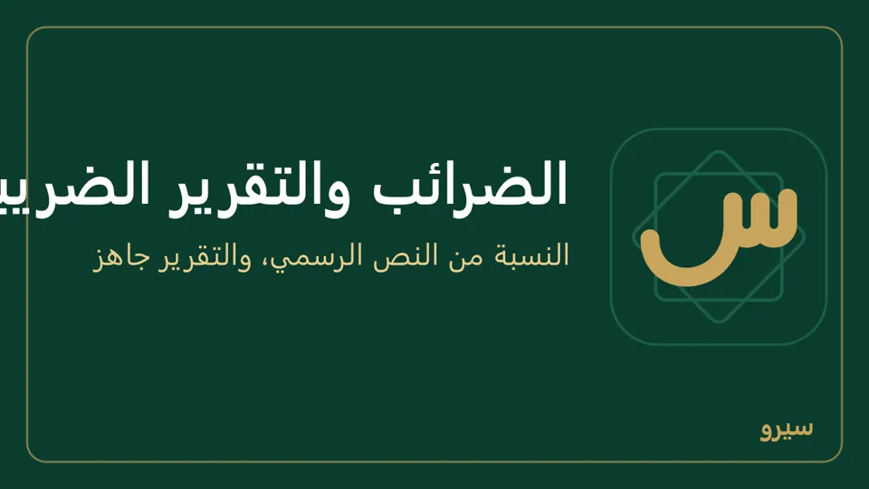
على الجوال: المحاسبة ← التقرير الضريبي، واختر الفترة (أو فترة أخرى بتاريخين)، ومشاركة ترسله نصاً.
الأرقام من القيود المرحّلة: المرتجع يُنقص ضريبته وحده، وفاتورة من شهر مقفل أُلغيت أو عُدّلت بعده تبقى في شهرها كما قُدّم، ويظهر إلغاؤها بالسالب في شهر الإلغاء. الضرائب نفسها تُضبط من الإعدادات ← التوطين.